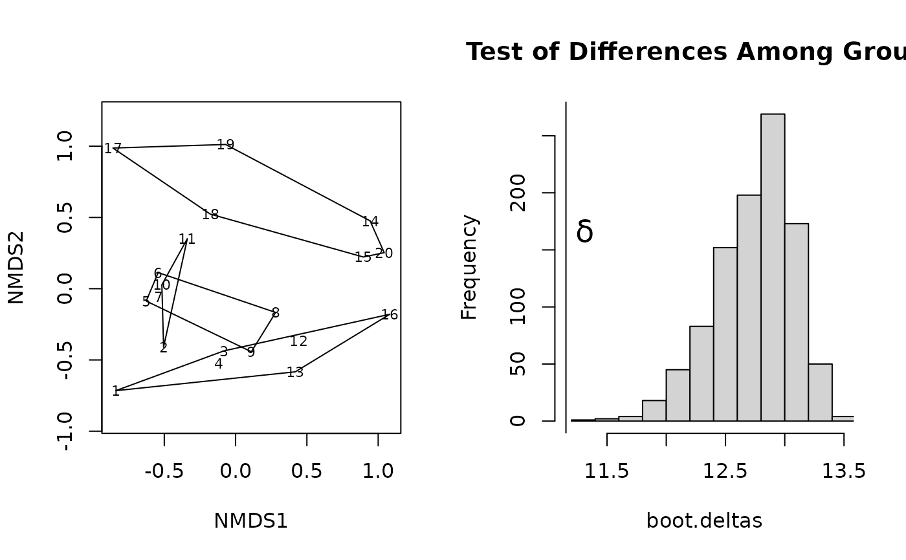

mrpp.RdMultiple Response Permutation Procedure (MRPP) provides a
test of whether there is a significant difference between two or more
groups of sampling units. Function meandist finds the mean within
and between block dissimilarities.
mrpp(dat, grouping, permutations = 999, distance = "euclidean",
weight.type = 1, strata = NULL, parallel = getOption("mc.cores"))
meandist(dist, grouping, ...)
# S3 method for meandist
summary(object, ...)
# S3 method for meandist
plot(x, kind = c("dendrogram", "histogram"), cluster = "average",
ylim, axes = TRUE, ...)data matrix or data frame in which rows are samples and columns are response variable(s), or a dissimilarity object or a symmetric square matrix of dissimilarities.
Factor or numeric index for grouping observations.
a list of control values for the permutations
as returned by the function how, or the
number of permutations required, or a permutation matrix where each
row gives the permuted indices. These are used to assess
the significance of the MRPP statistic, \(delta\).
Choice of distance metric that measures the
dissimilarity between two observations . See vegdist for
options. This will be used if dat was not a dissimilarity
structure of a symmetric square matrix.
choice of group weights. See Details below for options.
An integer vector or factor specifying the strata for permutation. If supplied, observations are permuted only within the specified strata.
Number of parallel processes or a predefined socket
cluster. With parallel = 1 uses ordinary, non-parallel
processing. The parallel processing is done with parallel
package.
A dist object of dissimilarities, such as
produced by functions dist, vegdist or
designdist.
.
A meandist result object.
Draw a dendrogram or a histogram; see Details.
A clustering method for the hclust
function for kind = "dendrogram".
Any hclust method can be used, but perhaps only
"average" and "single" make sense.
Limits for vertical axes (optional).
Draw scale for the vertical axis.
Further arguments passed to functions.
Multiple Response Permutation Procedure (MRPP) provides a test of
whether there is a significant difference between two or more groups
of sampling units. This difference may be one of location (differences
in mean) or one of spread (differences in within-group distance;
cf. Warton et al. 2012). Function mrpp operates on a
data.frame matrix where rows are observations and responses
data matrix. The response(s) may be uni- or multivariate. The method
is philosophically and mathematically allied with analysis of
variance, in that it compares dissimilarities within and among
groups. If two groups of sampling units are really different (e.g. in
their species composition), then average of the within-group
compositional dissimilarities ought to be less than the average of the
dissimilarities between two random collection of sampling units drawn
from the entire population.
The mrpp statistic \(\delta\) is the overall weighted mean of
within-group means of the pairwise dissimilarities among sampling
units. The choice of group weights is currently not clear. The
mrpp function offers three choices: (1) group size (\(n\)),
(2) a degrees-of-freedom analogue (\(n-1\)), and (3) a weight that
is the number of unique distances calculated among \(n\) sampling
units (\(n(n-1)/2\)).
The mrpp algorithm first calculates all pairwise distances in
the entire dataset, then calculates \(\delta\). It then permutes the
sampling units and their associated pairwise distances, and
recalculates \(\delta\) based on the permuted data. It repeats the
permutation step permutations times. The significance test is
the fraction of permuted deltas that are less than the observed delta,
with a small sample correction. The function also calculates the
change-corrected within-group agreement \(A = 1 -\delta/E(\delta)\),
where \(E(\delta)\) is the expected \(\delta\) assessed as the
average of dissimilarities.
If the first argument dat can be interpreted as
dissimilarities, they will be used directly. In other cases the
function treats dat as observations, and uses
vegdist to find the dissimilarities. The default
distance is Euclidean as in the traditional use of the method,
but other dissimilarities in vegdist also are available.
Function meandist calculates a matrix of mean within-cluster
dissimilarities (diagonal) and between-cluster dissimilarities
(off-diagonal elements), and an attribute n of grouping
counts. Function summary finds the within-class, between-class
and overall means of these dissimilarities, and the MRPP statistics
with all weight.type options and the Classification Strength,
CS (Van Sickle and Hughes, 2000). CS is defined for dissimilarities as
\(\bar{B} - \bar{W}\), where \(\bar{B}\) is the
mean between cluster dissimilarity and \(\bar{W}\) is the mean
within cluster dissimilarity with weight.type = 1. The function
does not perform significance tests for these statistics, but you must
use mrpp with appropriate weight.type. There is
currently no significance test for CS, but mrpp with
weight.type = 1 gives the correct test for \(\bar{W}\)
and a good approximation for CS. Function plot draws a
dendrogram or a histogram of the result matrix based on the
within-group and between group dissimilarities. The dendrogram is
found with the method given in the cluster argument using
function hclust. The terminal segments hang to
within-cluster dissimilarity. If some of the clusters are more
heterogeneous than the combined class, the leaf segment are reversed.
The histograms are based on dissimilarities, but ore otherwise similar
to those of Van Sickle and Hughes (2000): horizontal line is drawn at
the level of mean between-cluster dissimilarity and vertical lines
connect within-cluster dissimilarities to this line.
The function returns a list of class mrpp with following items:
Function call.
The overall weighted mean of group mean distances.
expected delta, under the null hypothesis of no group structure. This is the mean of original dissimilarities.
Classification strength (Van Sickle and Hughes,
2000). Currently not implemented and always NA.
Number of observations in each class.
Mean dissimilarities within classes. The overall
\(\delta\) is the weighted average of these values with given
weight.type
.
Significance of the test.
A chance-corrected estimate of the proportion of the distances explained by group identity; a value analogous to a coefficient of determination in a linear model.
Choice of distance metric used; the "method" entry of the dist object.
The choice of group weights used.
The vector of "permuted deltas," the deltas
calculated from each of the permuted datasets. The distribution of
this item can be inspected with permustats function.
The number of permutations used.
A list of control values for the permutations
as returned by the function how.
B. McCune and J. B. Grace. 2002. Analysis of Ecological Communities. MjM Software Design, Gleneden Beach, Oregon, USA.
P. W. Mielke and K. J. Berry. 2001. Permutation Methods: A Distance Function Approach. Springer Series in Statistics. Springer.
J. Van Sickle and R. M. Hughes 2000. Classification strengths of ecoregions, catchments, and geographic clusters of aquatic vertebrates in Oregon. J. N. Am. Benthol. Soc. 19:370--384.
Warton, D.I., Wright, T.W., Wang, Y. 2012. Distance-based multivariate analyses confound location and dispersion effects. Methods in Ecology and Evolution, 3, 89--101
This difference may be one of location (differences in mean) or one of
spread (differences in within-group distance). That is, it may find a
significant difference between two groups simply because one of those
groups has a greater dissimilarities among its sampling units. Most
mrpp models can be analysed with adonis2 which seems
not suffer from the same problems as mrpp and is a more robust
alternative.
data(dune)
data(dune.env)
dune.mrpp <- with(dune.env, mrpp(dune, Management))
dune.mrpp
#>
#> Call:
#> mrpp(dat = dune, grouping = Management)
#>
#> Dissimilarity index: euclidean
#> Weights for groups: n
#>
#> Class means and counts:
#>
#> BF HF NM SF
#> delta 10.03 11.08 10.66 12.27
#> n 3 5 6 6
#>
#> Chance corrected within-group agreement A: 0.1246
#> Based on observed delta 11.15 and expected delta 12.74
#>
#> Significance of delta: 0.001
#> Permutation: free
#> Number of permutations: 999
#>
# Save and change plotting parameters
def.par <- par(no.readonly = TRUE)
layout(matrix(1:2,nr=1))
plot(dune.ord <- metaMDS(dune), type="text", display="sites" )
#> Run 0 stress 0.1192678
#> Run 1 stress 0.1183186
#> ... New best solution
#> ... Procrustes: rmse 0.02027156 max resid 0.06496765
#> Run 2 stress 0.1183186
#> ... Procrustes: rmse 2.884302e-05 max resid 9.148394e-05
#> ... Similar to previous best
#> Run 3 stress 0.1192679
#> Run 4 stress 0.1192679
#> Run 5 stress 0.1183186
#> ... New best solution
#> ... Procrustes: rmse 1.722124e-05 max resid 5.532496e-05
#> ... Similar to previous best
#> Run 6 stress 0.1192678
#> Run 7 stress 0.1990349
#> Run 8 stress 0.1922241
#> Run 9 stress 0.1183186
#> ... New best solution
#> ... Procrustes: rmse 7.093173e-06 max resid 2.298683e-05
#> ... Similar to previous best
#> Run 10 stress 0.1183186
#> ... Procrustes: rmse 5.358171e-06 max resid 1.78836e-05
#> ... Similar to previous best
#> Run 11 stress 0.1192678
#> Run 12 stress 0.1192678
#> Run 13 stress 0.1192678
#> Run 14 stress 0.1192678
#> Run 15 stress 0.1183186
#> ... Procrustes: rmse 2.298566e-06 max resid 7.039978e-06
#> ... Similar to previous best
#> Run 16 stress 0.1192678
#> Run 17 stress 0.1192679
#> Run 18 stress 0.1192678
#> Run 19 stress 0.1183186
#> ... Procrustes: rmse 1.351272e-05 max resid 3.934786e-05
#> ... Similar to previous best
#> Run 20 stress 0.1809578
#> *** Solution reached
with(dune.env, ordihull(dune.ord, Management))
with(dune.mrpp, {
fig.dist <- hist(boot.deltas, xlim=range(c(delta,boot.deltas)),
main="Test of Differences Among Groups")
abline(v=delta);
text(delta, 2*mean(fig.dist$counts), adj = -0.5,
expression(bold(delta)), cex=1.5 ) }
)

par(def.par)
## meandist
dune.md <- with(dune.env, meandist(vegdist(dune), Management))
dune.md
#> BF HF NM SF
#> BF 0.4159972 0.4736637 0.7296979 0.6247169
#> HF 0.4736637 0.4418115 0.7217933 0.5673664
#> NM 0.7296979 0.7217933 0.6882438 0.7723367
#> SF 0.6247169 0.5673664 0.7723367 0.5813015
#> attr(,"class")
#> [1] "meandist" "matrix"
#> attr(,"n")
#> grouping
#> BF HF NM SF
#> 3 5 6 6
summary(dune.md)
#>
#> Mean distances:
#> Average
#> within groups 0.5746346
#> between groups 0.6664172
#> overall 0.6456454
#>
#> Summary statistics:
#> Statistic
#> MRPP A weights n 0.1423836
#> MRPP A weights n-1 0.1339124
#> MRPP A weights n(n-1) 0.1099842
#> Classification strength 0.1127012
plot(dune.md)
plot(dune.md, kind="histogram")